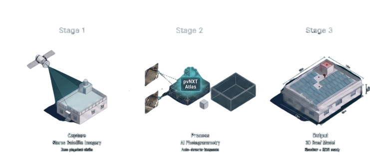

Core technology
Satellite to 3D model.
Atlas turns satellite imagery into an accurate 3D roof model, so design can start before anyone visits the site.
Built and run by our in-house satellite imagery team.
Atlas model: 3D rotate loop1600×1000 · MP4/WebP · real roof with shadow overlay
How you get a model
How you get a model.
Typical turnaround: within 24 hours.
01
Share the site address
02
Our imagery team builds the model
03
It appears in Studio or Connect
Attached to your project.
The pipeline
How Atlas works.
Stereo satellite imagery, photogrammetry, then a roof model with slopes, obstructions and nearby shadow sources.

What the model shows.
- Roof outline and slope
- Obstructions and keep-out areas
- Shadows from nearby buildings and trees
Model with overlays1440×900 · PNG
Sample 3D model, as Studio shows it1600×1000
What it replaces
Replaces: manual roof measurement and repeat site visits.
Here is a sample model, exactly as Studio shows it.
What it does not do.
A satellite model is not a site survey. For sites where precision matters, we check on the ground. Field data goes back into the same project.